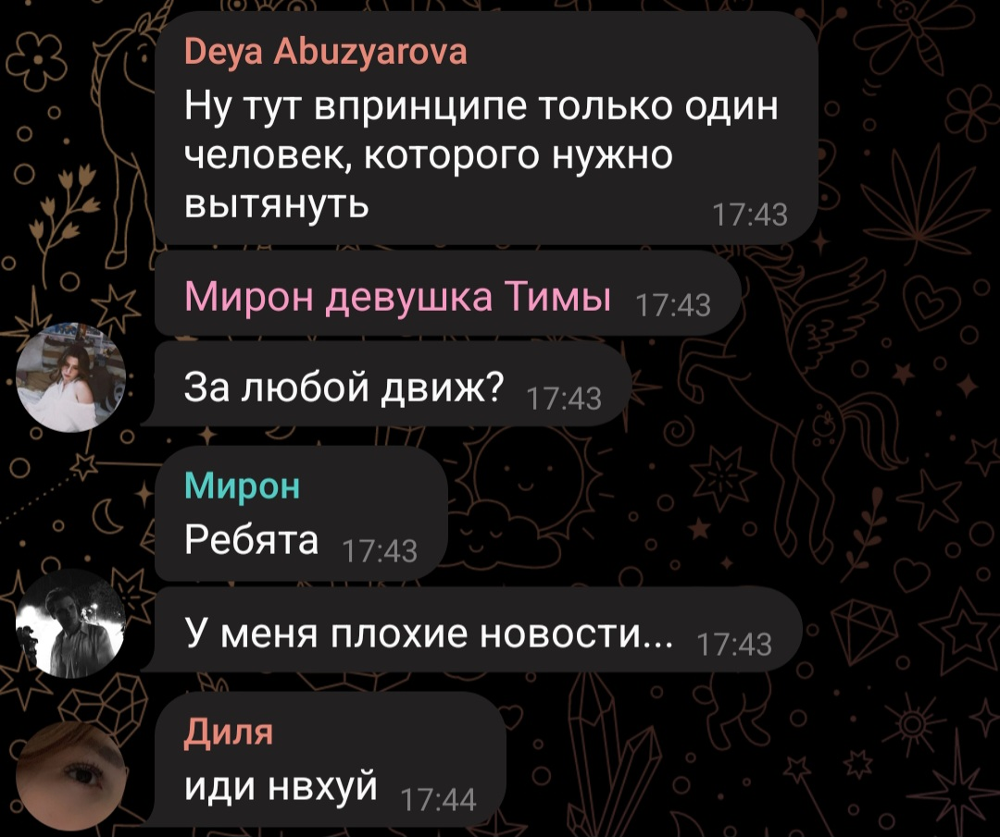
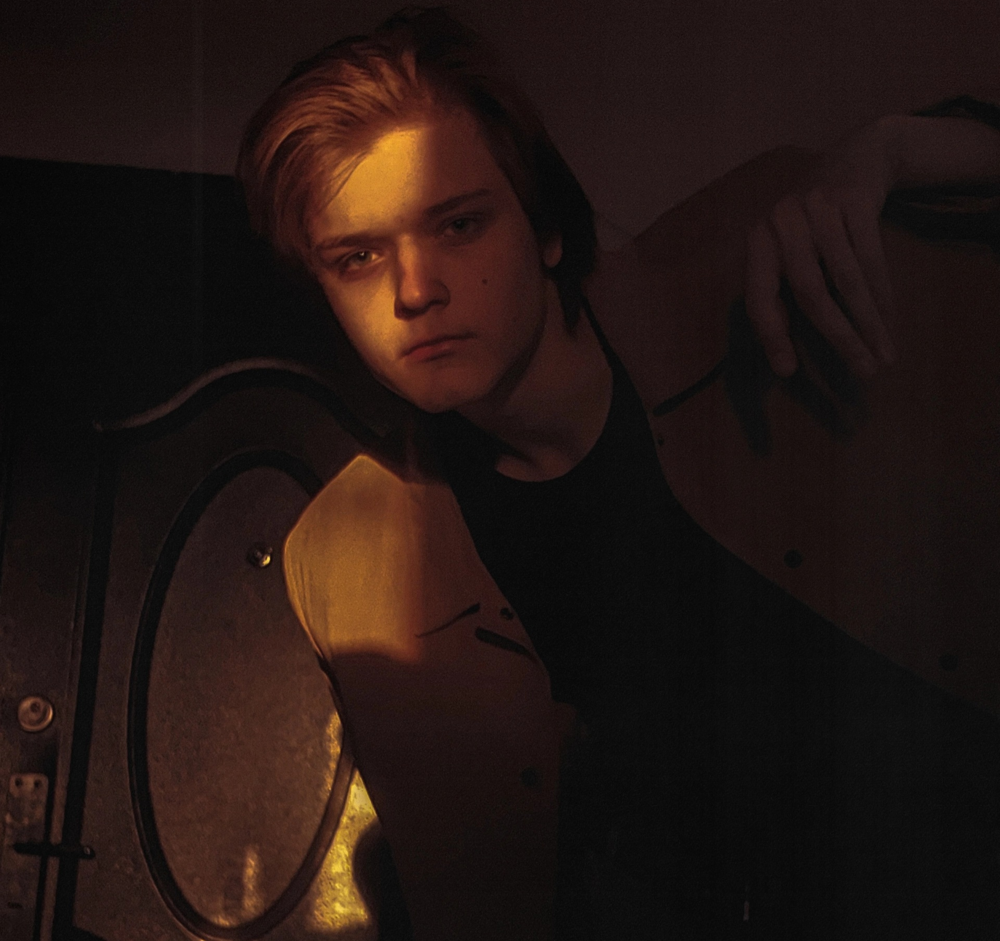
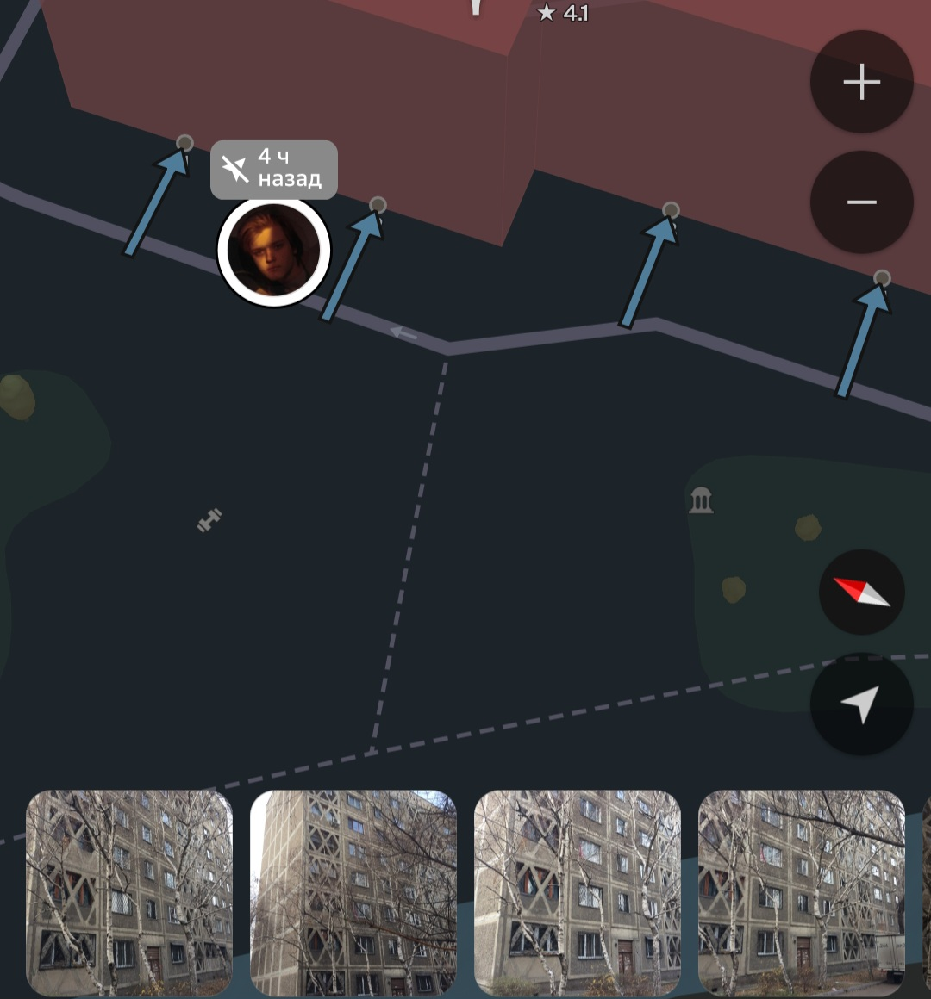
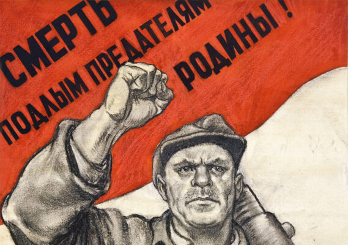
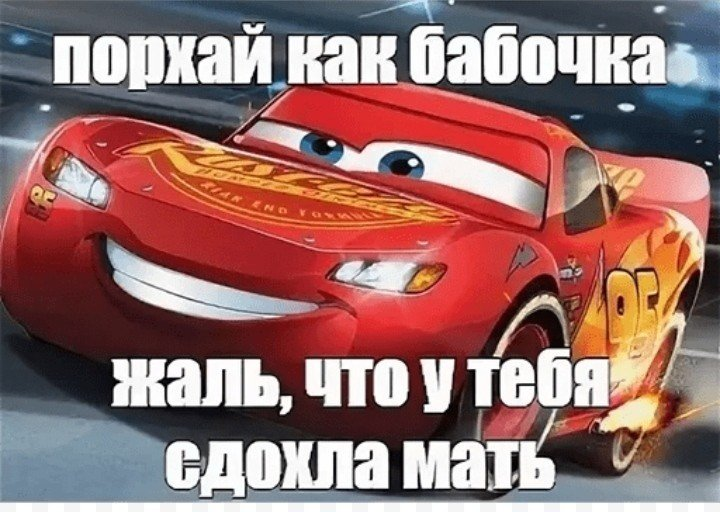
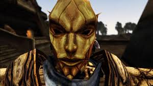

Топ причин почему Мирон пидор:
Причина 1
Кидала .
Причина 2
Просто так.
Причина 3
Не хотел давать адрес.Уебан. ФИО: Носов Мирон Станиславович. Адрес: Кожамкулова 117, 1 подъезд, 8 этаж Номер:+7 700 216 3117 Вк:@vosonnorim
Причина 4
Поменял нас на класс фашистов (кидала х2)
Причина 5
Люблю твою маму.
Причина 6

Бросил Султана Сулейменова
Причина 7
Мы следим за тобой. Ничтожество.